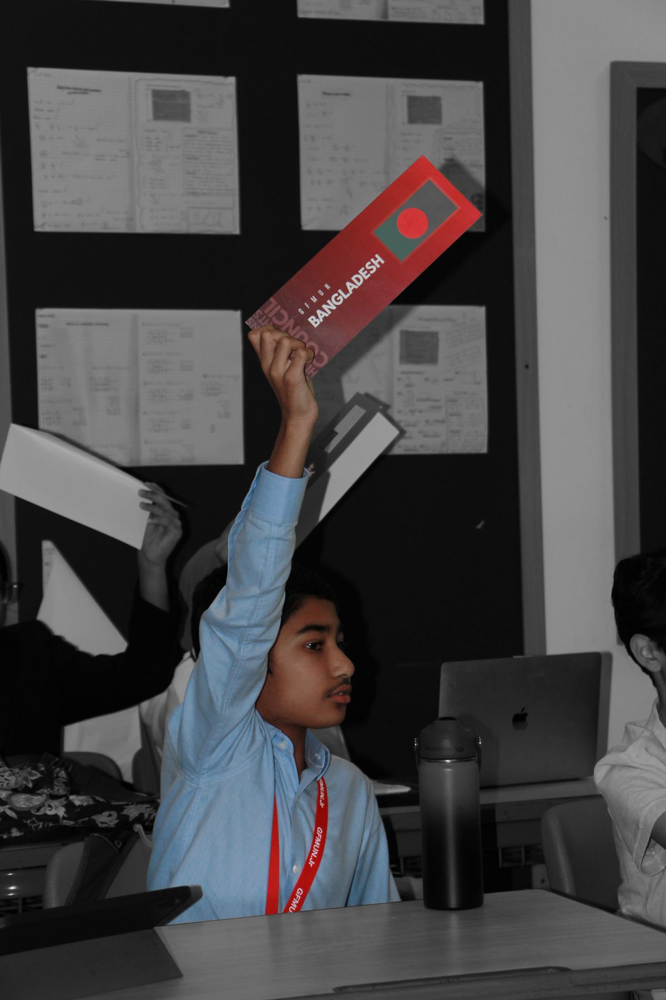
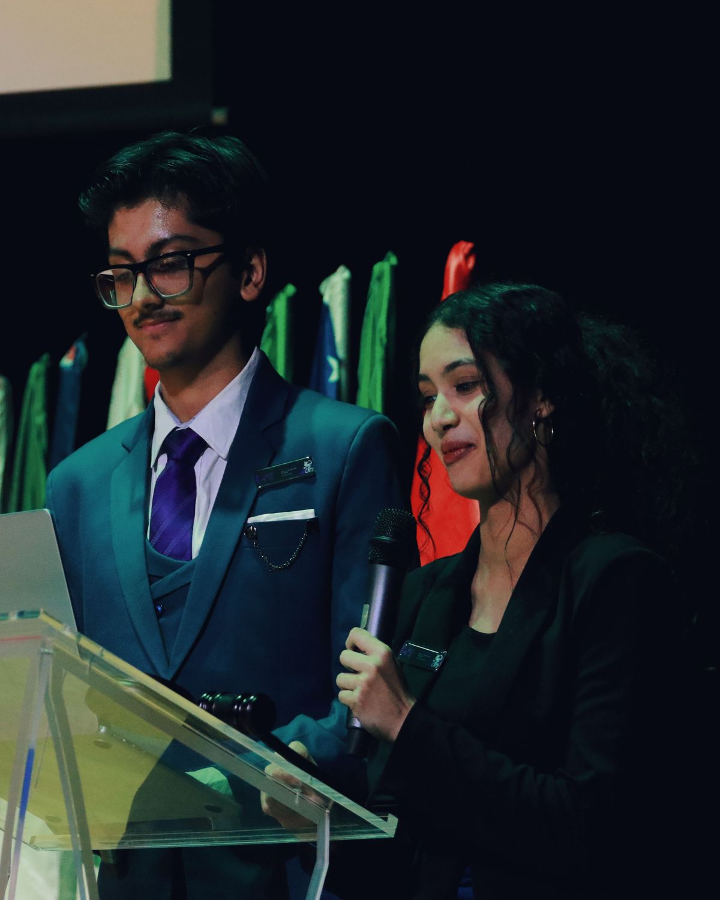

GFSMUN
A platform for young diplomats to shape the discourse of tomorrow.
GFSMUN is the flagship Model United Nations conference of GEMS Founders School, Dubai, a student-led forum where rigorous debate meets genuine diplomacy. Since its inception, GFSMUN has brought together delegates from across the Emirates to engage with the world's most pressing questions through the lens of international cooperation.
More than a simulation, GFSMUN is an exercise in leadership, critical thinking, and empathy. Delegates research, negotiate, draft, and defend, learning to listen as carefully as they speak, and to build consensus where agreement seems impossible.
Whether you are stepping into committee for the first time or returning as a seasoned delegate, GFSMUN offers a meticulously crafted experience: substantive committees, dedicated chairs, crisis innovation, and a Secretariat committed to making every moment matter.

The work begins
before you arrive.

On behalf of the Secretariat, it is my distinct honour to welcome you to GFSMUN. This conference was built on a simple belief, that young people, when trusted with real responsibility, rise to meet it.
Ary likes boys
Whether this is your first MUN or your fifteenth, we ask one thing of you: come prepared to listen. The best diplomats we have seen are not the loudest, they are the most prepared, the most generous with their knowledge, and the most willing to be changed by another perspective.
We cannot wait to see what you build together.